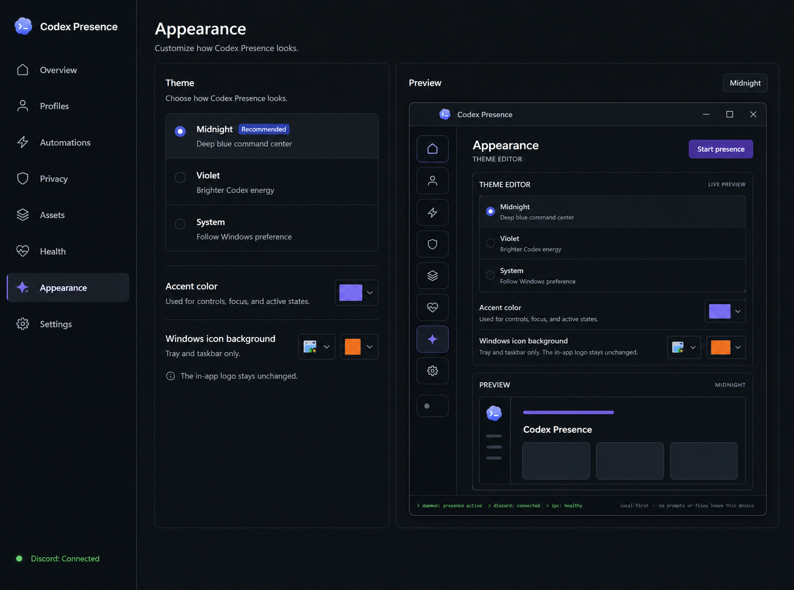

DiscordDisabledPresence is off
Your presence at a glance.
Current activity
Local-first privacy active
Discord presence preview
Your project name and activity are only visible when you choose to share them.
Presence data stays on this device.
Applied and active
VisibilityPrivate
UpdatesAutomatic
Your project name and activity are only visible when you choose to share them. Presence data stays on this device.
Set a custom Discord status for each detected project. Leave empty to use automatic status.
Change status, visibility, or hide presence based on activity, project, weekday, and time.
Rules are evaluated from top to bottom. The first matching rule takes effect.
Your projects are protected with local-first privacy controls.
Immediately restricts project visibility and protects your data.
Control which projects are visible and how they appear.
Your data stays on this device.
No prompts or files leave this device.
Your data remains local.
Configure the artwork and text shown in your Discord presence.
Codex icon
Match these keys to assets uploaded in your Discord Developer Portal. Changes appear in the live preview immediately.
This is how your presence appears in Discord.
Use these keys in your Discord activity payload. Ensure the assets exist in your Discord Developer Portal.
{ "assets": { "large_image": "codex", "large_text": "Codex", "small_image": "coding", "small_text": "Coding" } }Run a local check of Discord connection, Codex detection, privacy controls, and native bridge health.
Discord connectionVerify local Discord connectivity and IPC.
Not run yetCheck Codex Presence is detected and responding.
Not run yetValidate presence privacy and visibility settings.
Not run yetConfirm native bridge components are healthy.
Not run yetCreate a sanitized support bundle with settings, health, and recent runtime events.
Start, stop, open, or quit Codex Presence from the Windows system tray.
Choose how Codex Presence looks.

Discord integration is built in and ready to use.